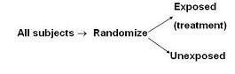

Randomization
Definition of Randomization
Definition of Randomization: random assignment of subjects to exposure (e.g., treatment) categories

One of the three main ways for reducing confounding during study design.
Randomization to Reduce Bias
In the following DAG, you can see that with randomization
- Therefore, confounding cannot occur.

This is why randomization holds it exulted place in clinical research as the cadillac method to deal with confounding.
- If one can implement it in one's study, randomization is the optimal strategy to reduce confounding.
How Randomization Works
In randomization all study subjects are randomly allocated to an exposure group.
- This is most commonly some form of therapy, but can also be an exposure in the sense of a diet or other behavioral modification.
- As usual, “exposure” is used very generally here to mean predictor or independent variable.
Since the exposure groups are created by a random process, the distribution of any variable you can think of is theoretically the same in the exposed group and the unexposed group. Therefore, there can be no association between exposure and any other variable.
Randomization is truly one of the most important inventions of the 20th century.
Applicability of Randomization
Applicable only for ethically assignable exposures (ie, interventions, experiments)
- In other words, it is only relevant when you are doing things to people or you are instructing them to do things to themselves.
Special strength of randomization is its ability to control the effect of confounding variables about which the investigator is unaware
- Because distribution of any variable is theoretically the same across randomization groups
Limitation of Randomization
Not for naturally occuring exosures (e.g., air pollution)
- There are sadly limitations to this in that we cannot, for example, randomize people to naturally occuring exposures, e.g. smoking or air pollution, or unprotected sexual behavior.
Unfortunately, as mentioned, in some fields we unfortunately do not have the luxury of randomization and hence we have to live by our wits. Fortunately, there are good techniques we can use even if we cannot randomize.
Randomizaton Does Not Always Eliminate Confounding
Randomization does not always eliminate confounding!
- By chance alone, there can be imbalance
Randomization does not always eliminate confounding, especially in small studies. It may not lead to perfect balancing of potential confounding factors in the 2 exposure arms (in the case of a drug trial, treatment and placebo arms, for example). Just by chance alone, there can be imbalance.
- Less of a problem in large studies
The bigger the study, the less of a problem this is.
- Techniques exist to ensure balance of certain variables
For those of you in the trial business, you will want to pay attention to this and know that there are also certain specialized randomization techniques that help to assure balance of potential confounders even in small studies.
What To Do If You Cannot Randomize
Unfortunately, as mentioned, in some fields we unfortunately do not have the luxury of randomization and hence we have to live by our wits.
- Fortunately, there are good techniques we can use even if we cannot randomize.
Restriction, also known as specification, is one such method, and probably the most blunt one we can use.
Jeff Martin, MD
-- MaryB - 02 Apr 2009